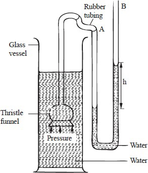
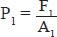
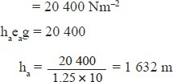

The aim of this module is to blend learning of abstract
Physics concepts from the field of pressure
with IT in an interactive IT environment that promotes
grasping of the course material in a simplifed learnable
manner.
Authors
This module is the culmination of the following minds cohesively working in earnest
to bring you the product you will come to love and appreciate.
The term pressure is used in day-to-day life. To understand its meaning, consider
the following examples of experiences with force on solids.
A person makes deeper marks while walking on soft ground in high-heeled
shoes than in flat shoes.
figure 1.1: High and flat-heeled shoes
It is easier to push a sharp pin through a cardboard than it is to push a
blunt one through the same material using the same force, see figure 1.2 (a)
and (b).
figure 1.2: Effect of force on an area
In all the above cases, a given force acting on an area causes a penetration,
depression or distortion. The effect is greater when the force acts on a smaller
area than when it acts on a larger area.
In general, when a force is applied on a given area, pressure is exerted on
the surface.
Pressure is defined as the force acting normally (perpendicularly) per
unit area.
Units of Pressure
From the definition,
Therefore, the SI unit of pressure
The SI unit of pressure is thus newton per square metre (Nm–2), which is also
called the Pascal (Pa).
1 Nm–2 = 1 Pa
Other units include the mmHg, the cmHg and an atmosphere (atm).
Example 1
A man of mass 84 kg stands upright on a floor. If the area of contact of his shoes
and floor is 420 cm2, determine the average pressure he exerts on the floor.
(Take g = 10 Nkg–1)
solution
Example 2
A metallic block of mass 40 kg exerts a pressure of 20 Nm -2 on a flat surface.
Determine the area of contact between the block and the surface.
(Take g = 10 Nkg -1 )
solution
Example 3
A brick 20 cm long, 10 cm wide and 5 cm thick has a mass of 500 g. Determine
the:
greatest pressure that can be exerted by the brick on a flat surface.
least pressure that can be exerted by the brick on a flat surface. (Take g = 10 Nkg -1 )
solution
Dimensions of the brick are 0.20 m, 0.10 m and 0.05 m.
P is greatest when area A is smallest.
Area of the smallest face of the brick
= 0.10 × 0.05
= 0.005 m2
Pressure is least when area A is greatest.
From the above examples, it is clear that:
If area is held constant, the higher the force, the higher the pressure and the
lower the force, the lower the pressure.
If force is kept constant, the smaller the area, the greater the pressure and
the larger the area, the smaller the pressure.
Pressure in Liquids
Experiment 1.1: To show variation of pressure in liquid
Apparatus
tall tin, a small nail, water.
Procedure
Using the nail, make three holes, A, B and C, of the same diameter along a
vertical line on one side of the tin.
Fill the tin with water as shown in figure 1.3.
With the tin full of water, observe the jets of water from the holes A, B and C.
figure 1.3: Pressure and depth
Observation
The lower hole, A, throws water the farthest distance z, followed by B distance y
and lastly C distance x.
Conclusion
Pressure of water at A is greater than pressure at B and pressure at B is greater
than at C. Hence, pressure increases with depth.
Increase in pressure with depth explains why dam walls are constructed
thicker at the bottom than at the top. See figure 1.4 below.
figure 1.4: Curved wall and section of a dam
Additionally, the walls of the dam are curved to increase the surface area, hence
reduce the pressure.
Liquid Levels
When a liquid is poured into a set of open and connected vessels with different
shapes (and area of cross-section), it flows until the levels are the same in all the
vessels, as shown in figure 1.5.
figure 1.5: A liquid finds its own level
This shows that the liquid flows to find its own height regardless of the shape of
the vessel.
Liquid Levels in a U-tube
When water is poured into one arm of a U-tube, it will flow into the other arm.
The water will settle in the tube with the levels on both arms being the same, see
figure 1.6 (a).
figure 1.6: Effect of pressure on liquid levels
When one arm of the U-tube is blown into with the mouth, the level moves
downwards, while in the other arm it rises, see figure between 1.6 (b). This is
caused by the pressure difference between the two arms. The pressure increases
on the arm that is blown into and causes water to rise on the other arm.
Experiment 1.2 (a): To investigate the variation of liquid pressure with
depth and density
Apparatus
A tall jar, liquids of different densities, thistle funnel, U-tube, rubber tubing.
Procedure
Fill the glass vessel with water.
Connect the thistle funnel to a U-tube filled to some level with water.
Lower the funnel to different depths from the surface and notice the
difference in levels, h, of water in the U-tube, see figure 1.7.
Replace the water in the glass vessel with a denser liquid, such as sodium
chloride solution (brine).
Lower the funnels to the same depths as above and compare the heights
obtained.
figure 1.7: Pressure variation in a liquid
Observation
The deeper the funnel goes below the surface, the greater the difference in
levels, h.
The differences in levels, h, obtained with brine at a particular depth is
greater than that obtained with water at that depth.
Conclusion
Pressure in a liquid increases with the density of the liquid and with depth.
Experiment 1.2 (b): To show the distribution of pressure at a point in a
liquid
Apparatus
A tall jar, water, thistle funnels, U-tube, rubber tubing.
Procedure
Fill the glass vessel with water.
Connect one of the thistle funnels to a U-tube filled to some level with water.
Lower the funnel P to a depth from the surface of the water and notice the
difference in levels, h, of the water in the U-tube.
Replace the funnel with Q whose mouth is pointing in a different direction.
Lower the funnel Q into the water so that the mouth of the funnel is at the
same point as the straight one P. Observe the difference in the levels of the
water in the U-tube.
figure 1.8: Pressure distribution
Observation
At the same depth in a given liquid, difference in levels obtained is the same
regardless of the direction which the funnel faces.
Conclusion
Pressure in liquids increases with density and depth.
In summary:
pressure in a liquid increases with depth below its surface.
pressure in a liquid increases with the density of the liquid.
the distribution of pressure in a liquid at a particular depth is the same in
all directions.
Derivation of Fluid Pressure Formula P = hρg
figure 1.9: Liquid column
If A is the cross-section area of the column, h the height of the column and ρ the
density of the liquid, then;
Volume of the liquid
= cross-section × height = Ah
Mass of the liquid
= volume of the liquid × density
= Ahρ
Therefore, weight of the liquid column
= mass of the liquid × gravitational force per unit mass
= Ahρg
Therefore, pressure P exerted by the column on A is given by, p = hρg
From the formula P = hρg, it can be seen that the pressure due to a liquid column
is directly proportional to:
height h of the column.
the density ρ of the liquid.
Pressure does not depend on the cross-section area of the container which holds
the liquid.
The formula is also used to determine pressure due to a column of gas.
Example 4
A diver is 10 m below the surface of the water in a dam. If the density of water is
1 000 kgm–3, determine the pressure due to the water on the diver. (Take g = 10
Nkg–1)
solution
Pressure on the diver is given by;
P = hρg
= 10 × 1 000 × 10
= 100 000 Nm–2
Example 5
The density of mercury is 13 600 kgm–3. Determine the liquid pressure at a point
76 cm below the surface of mercury. (Take g = 10 Nkg–1)
solution
Pressure is given by P = hρg
= 0.76 × 13 600 × 10
= 103 360 Nm–2
Transmission of Pressure in Liquids
Consider:
Fig. 1.10 shows a round bottomed flask fitted with a piston and holes of same
diameter drilled along the same level.
figure 1.10
Initially, the water squirts out at the same rate with some force. When the
plunger is pushed in, the liquid squirts out at the same rate but with increased
force. If the plunger exerts a force F and the piston area is A, then the additional
pressure P = F/A , developed is transmitted equally to all parts of the liquid forcing
the liquid out of the holes with the same increased force.
Experiment 1.3: To investigate how pressure is transmitted in liquids
(Pascal’s principle)
Using Identical Syringes
Apparatus
Two identical syringes, rubber tubing, water, pairs of different masses, two
stands and clamps.
Procedure
Set up the apparatus as shown in figure 1.11.
Place a mass m on one of the plungers and observe what happens.
Place an identical mass on the other plunger and observe what happens.
Repeat with the other pairs of identical masses.
figure 1.11: Transmission of pressure in liquids
observation
When the first mass is placed on the plunger, the plunger moves
downwards and the second plunger moves up.
When an identical mass is placed on the second plunger, the first plunger
with the mass on it moves upwards and stops when their levels are the
same.
The pressure in the two syringes is the same. This is because the masses and the
diameters of the syringes are the same.
Using Syringes of Different Diameters
Apparatus
Syringes of different diameters, two stands and clamps, different masses, water,
rubber tubing.
figure 1.12: Effects of transmitted pressure
Procedure
Replace one of the syringes in Experiment 1.3 (a) with syringe of different
diameter, and set up the apparatus as shown in figure 1.12.
Starting with a large mass on syringe Q, put masses on syringe P until Q just
starts to move upwards. Note the mass on P and Q as in table 1.1.
Table 1.1
Conclusion
At balance, the pressure due to the mass in P is equal to the pressure due to the
other mass in Q.
From the foregoing experiment, pressure applied at one part of an enclosed
liquid is transmitted equally to all other parts of the enclosed liquid. This is
called the principle of transmission of pressure in liquids (Pascal’s
Principle). Gases may transmit pressure in a similar way when they are confined
and incompressible.
Hydraulic Machines
The principle of transmission of pressure in liquids is made use of in hydraulic
machines where a small force applied at one point of a liquid produces a much
larger force at some other point of the liquid.
Hydraulic Lift
The hydraulic lift consists of a small piston S of cross-section area A1 and a
large piston L of cross-section area A2. When a force is applied on piston S, the
pressure generated by the force is transmitted throughout the liquid to piston L,
see figure 1.13.
figure 1.13: Hydraulic lift
Consider a force F1 applied on the small piston of cross-section area A1. Then,
pressure P1 generated on the liquid by the piston S due to F1 is given by;

This pressure is transmitted by the liquid to the larger piston L. Therefore,
pressure of liquid acting on the area A2 of the large piston is equal to P1. Thus,
the force F2 produced on the large piston is given by;
F2 = pressure × area
= P1 × A2
Hydraulic lifts are used to hoist cars in garages. Hydraulic presses on the other
hand are used to compress certain materials such as cotton bales into the
required shapes and sizes.
Example 6
A small force of 100 N applied on the small piston of area A1 equal to 0.25 m2
produces a bigger force F2 on a larger piston of area A2 equal to 10 m2. See
figure 1.14 below. Calculate F2.
figure 1.14
solution
Note:
A small force applied on the small piston produces a much bigger force on the
larger piston.
Hydraulic Brake System
figure 1.15: Vehicle hydraulic brake system
A vehicle hydraulic brake system is shown in figure 1.15.
The force applied on the brake pedal exerts pressure on the master cylinder.
The pressure is transmitted by the brake fluid to the slave cylinder. This causes
the pistons of slave cylinder to open the brake shoe and hence the brake lining
presses on the drum. The rotation of the wheel is thus resisted.
When the force on the foot pedal is withdrawn, the return spring pulls back
the brake shoe which then pushes the slave cylinder piston back.
The advantage of this system is that the pressure exerted in master cylinder
is transmitted equally to all the four wheel cylinders. Hence, the braking force
obtained is uniform.
The liquid to be used as a brake fluid should have the following properties:
Be incompressible, to ensure pressure exerted at one point is transmitted
equally to all other parts in the liquid.
Have low freezing point and high boiling point.
Should not corrode the parts of the brake system.
Atmospheric Pressure
figure 1.16: Atmosphere
Figure 1.16 (a) shows the earth’s atmosphere. The atmosphere thins outwards,
indicating the density of air decreases with the distance from the surface of the
earth.
Consider a column of air as in figure 1.16 (b), extending vertically into
space to the end of the atmosphere. This column of air stands on the earth’s
surface like a liquid in a tube and exerts pressure on the surface of the earth. The
pressure exerted on the surface of the earth by the weight of the air column is
called atmospheric pressure.
The existence of atmospheric pressure is demonstrated by the experiment
below.
Experiment 1.3: To investigate how pressure is transmitted in liquids
(Pascal’s principle)
Apparatus
Tin container with a tight-fitting cork, water, tripod stand, Bunsen burner.
Procedure
Remove the cork from the container and pour in some little water.
Boil the water for several minutes.
Replace the cork and allow the container to cool. You may pour cold water on
it to cool it faster. Observe what happens to the container.
observation
During cooling, the container is crushed in.
Expalnation
Steam from boiling water drives out most of the air inside the container, see
figure 1.17 (a). When the cork is first replaced, the steam pressure inside the
container balances the atmospheric pressure outside. On cooling, the steam
condenses.
A partial vacuum is therefore created in the container. Since pressure inside
the container is less than atmospheric pressure outside, the container is crushed,
see figure 1.17 (b).
Maximum Column of Liquid that can be Supported by Atmospheric
Pressure
When water is sucked up a straw as in figure 1.18, the air pressure inside the
straw reduces.
figure 1.18: The working of the drinking straw
The atmospheric pressure acting on the water surface is now greater than
the pressure inside the straw. Water is thus pushed up the straw by the
atmospheric pressure.
If the straw was long enough and sealed at the top, it would be possible to
estimate the height of water in the straw that would be supported by atmospheric
pressure.
A more convenient method is to use a glass tube sealed at one end, as in
figure 1.19 (a).
figure 1.19: Water and mercury columns supported by atmospheric pressure
Fill glass tubes of different lengths completely with water and invert them in a
water reservoir. You will realise that the water column can be very large, in fact
too large for your available apparatus to accommodate.
However, if mercury, which is much denser than water is used, the column
supported is found to be much shorter, see figure 1.19 (b). In this figure, the
mercury column in the tube exerts pressure at point B. For the height of this
column to remain constant, there must be a counter pressure to hold it up. This
counter pressure is provided by the atmosphere. At sea level, the atmospheric
pressure supports approximately 76 cm of mercury column or approximately 10
m of water column.
Example 7
A girl in a school situated in the coast region (sea level) plans to make a
barometer using sea-water of density 1 030 kgm–3. If the atmospheric pressure is
103 000 Nm–2, Determine the minimum length of the tube that she will require.
solution
Pressure in liquid is given by P = hρg
But P = atmospheric pressure
Therefore, hρg = atmospheric pressure
h × 1 030 × 10 = 103 000
Example 8
A sea diver is 35 m below the surface of sea-water. If density of the sea-water is
1.03 g/cm3 and g is 10 Nkg–1, determine the total pressure on him. Take
atmospheric pressure to be 103,00 N/m–2
solution
Pressure in liquid is given by P = hρg
But total pressure = atmospheric pressure, P a + liquid pressure
= Pa + hρg
= 103 000 + (35 × 1 030 × 10) Nm–2
= 463 500 Nm–2
Example 9
The air pressure at the base of a mountain is 75.0 cm of mercury while at the top
it is 60.0 cm of mercury. Given that the average density of air is 1.25 kgm–3 and
the density of mercury is 13 600 kgm–3, calculate the height of the mountain.
solution
Pressure difference due to column of air (height of mountain)
= Pressure difference due to mercury column
Pressure at the top of the mountain
= 0.60 × 13 600 × 10
= 81 600 Nm–2
Pressure at the base of the mountain
= 0.75 × 13 600 × 10
= 102 000 Nm–2
Pressure difference
= 102 000 – 81 600
= 20 400 Nm–2
Pressure due column of air

The height of the mountain is 1 632 m
Measurement of Pressure
U-tube Manometer
figure 1.20: Measurement of gas pressure
A manometer is an instrument that can measure fluid pressure. It consists of a Utube
filled with water or any other suitable liquid, see figure 1.20.
Suppose one limb of the manometer is connected to a gas supply. Due to
the pressure of the gas Pg, the water level in the other limb rises to, say, Y. This
difference in water levels is the difference between gas pressure Pg and the
atmospheric pressure Pa.
Since X and Z are at the same horizontal level, pressure at X equals
pressure at Z. Pressure at X is pressure of gas Pg.
Pressure at Z = atmospheric pressure + pressure due to the column of water
Therefore, Pg = Pa + hρg
Since density of water, ρ, and g are known, we can determine pressure of gas if
the atmospheric pressure is known.
Suppose
h = 20.0 cm and Pa = 103 000 Nm–2. Then, taking the density of water as 1 000
kgm–3,
Pg = 103 000 + 0.20 × 1 000 × 10
= 105 000 Nm–2
Mercury Barometer
It has been shown that atmospheric pressure supports a liquid column in a tube.
When this arrangement is used to measure pressure, it is called a barometer.
At sea level, a column of mercury and water supported by atmospheric
pressure is approximately 76 cm and 10 m respectively. Mercury, which is about
14 times denser than water, is chosen for atmospheric pressure measurements
since it gives a much shorter and measurable column.
Simple Mercury Barometer
The simple mercury barometer comprises a thick-walled glass tube of about one
metre long and sealed at one end.
It is carefully filled with mercury to the top and any bubbles of air in the
tube removed by closing the open end and inverting it severally. It is necessary
to remove the bubbles because they make the barometer defective.
The tube is refilled and the open end closed tightly. It is then inverted into a
dish filled with mercury and supported upright with a stand and clamp, see
figure 1.21. The tightly closed end is then opened while under the surface of the
mercury. The column of mercury in the tube drops to create a vacuum in the
space above the column.
figure 1.21: Simple mercury barometer
The height h of the column (barometric height) is a measure of the atmospheric
pressure.
At sea level, h = 76 cmHg.
Since density ρ of mercury is 13 600 kgm–3,
Pa = hρg
= 0.76 × 13 600 × 10
= 103 360 Nm–2
This is the standard atmospheric pressure, and is sometimes referred to as one atmosphere.
Testing the Vacuum Barometer
If the barometer has air at the top, then it is faulty. The value of pressure
indicated by such a barometer is less than the actual value since the trapped air
also exerts pressure on the mercury column.
To test for the vacuum, the tube is tilted as shown in figure 1.22 (a) so that the
topmost part of the tube is below the height that is supported by atmospheric
pressure.
figure 1.22
If there is air in the tube, the mercury will not fill the tube completely. However,
if the space is a vacuum, the mercury fills the tube completely.
The space above the mercury in the tube when upright is called Toricellian
vacuum and contains a little mercury vapour.
Fortin Barometer
The simple mercury barometer cannot be used for accurate measurements of
atmospheric pressure. An improved version called the Fortin barometer is used
where high precision is required.
It was designed by Fortin, a French instrument maker. Figure 1.23 shows
main parts of the barometer.
figure 1.23: Fortin barometer
The Fortin barometer has a:
vertical glass tube containing mercury.
leather bag as the reservoir of mercury.
short fixed main scale and a movable vernier scale which facilitates
accurate reading of the mercury height.
fixed ivory index with a sharp point at the bottom, which acts as the ‘zero’
mark of the main scale.
Before taking the reading, the level of mercury surface in the reservoir is
adjusted by turning the adjusting screw until the surface of the mercury just
touches the tip of the ivory index. The mirror-like mercury surface produces an
image of the tip which helps to make the adjustment very accurate. The height of
mercury is then read from the main scale and the vernier scale. Any change in air
pressure makes the surface of mercury in the reservoir move up and down and
therefore this adjustment is necessary before the barometer is read. The height of
mercury is read from the top part of the meniscus.
The readings obtained from the barometer are in terms of the height of
mercury column and are written as mmHg or cmHg (Hg is the chemical symbol
for mercury). Therefore, the atmospheric pressure at sea level is expressed as
760 mmHg. It is important however to note that pressure is force per unit area,
but not a length.
The atmospheric pressure Pa when the mercury column is 760 mm long is
given by;
Pa = hρg
= 0.76 × 13 600 × 10 (density of mercury is 13 600 kgm–3 and g is 10 Nkg-1)
= 103 360 Nm–2
Aneroid Barometer
The mercury barometer is the most reliable type of barometer, but is not readily
portable.
figure 1.24: Aneroid barometer
The aneroid barometer is a portable type of barometer consisting of a
sealed, corrugated metal box, as shown in figure 1.24. This metal box expands a
little if pressure outside is reduced, and reduces in volume a little if subjected to
higher pressure from outside. The motion due to the changes in shape of the
metal box is magnified by the corresponding movements of the spring strips,
lever arm, chain and finally the pointer on the scale.
Normally, the pointer would indicate a particular value of the atmospheric
pressure of the surrounding so that any changes in pressure would be noticeable
by the movement of the pointer to either side of this atmospheric value on the
scale.
The aneroid barometer movements make it adaptable to measure heights.
Altimeters are basically aneroid barometers, and are used in aircrafts to measure
heights.
The aneroid barometer is normally calibrated in millibars. 1 bar is a
pressure of 100 000 Nm–2 (standard atmospheric pressure)
Pressure Gauges
Pressure gauges are portable and are used mostly for measuring gas pressure,
tyre pressure, pressure of compressed air in compressors and steam pressure.
They are basically made of coiled flexible metal tubes which uncoil when
the pressure inside increases. The movement of the tube is made to drive a
pointer across a scale, through a combined system of levers and gears, see figure
1.25.
figure 1.25: Pressure gauge
Example 10
The pressure of a car tyre, measured with a pressure gauge, is 40 N/cm2.
Determine the total pressure of the tyre in Nm–2 given that atmospheric pressure
is 103 360 N/m2.
A bicycle pump is a simple form of a compression pump. Figure 1.26 shows the
main parts of the pump.
figure 1.26: Bicycle pump
It has a flexible leather washer which works both as a valve and a piston inside
the pump barrel. Before the pump is used, it is connected to the tyre which has a
rubber valve in it.
When the pump handle is drawn out as shown, the volume of air below the
washer increases and its pressure is reduced below the atmospheric pressure. Air
from outside the pump then flows past the leather washer into the barrel. At the
same time, the higher air pressure in the tube closes the tyre valve.
When the pump handle is pushed in, the air in the pump barrel is
compressed. The high pressure in the barrel presses the leather washer against
the sides of the barrel. When the pressure of the compressed air becomes greater
than that of air in the tyre, air is forced into the tyre through the tyre valve which
now opens.
Note that there is an increase in temperature of the pump barrel during
pumping. This is because of the work done in compressing air.
The Lift Pump
A lift pump is used to raise water from wells. It consists of a cylindrical metal
barrel with a spout. It has two valves, P and Q, as shown in figure 1.27.
To start the pump, water is poured on top of the piston (priming) so that a
good air-tight seal is made round the piston and valve P. The pump is operated
by means of a lever as shown in the figure.
Upstroke
When the plunger moves up during the upstroke, valve P closes due to its weight
and pressure of water above it. At the same time, air above valve Q expands and
its pressure reduces below atmospheric pressure. The atmospheric pressure on
water in the well below thus pushes water up past valve Q into the barrel, as
shown in figure 1.27 (a).
The plunger is moved up and down until the space between P and Q is
filled with water.
figure 1.27: Lift pump
Downstroke
During downstroke, valve Q closes due to its weight and pressure of water
above, see figure 1.27 (b).
Water is forced out through valve P and thus flows out of the spout.
Limitations of this pump
The atmospheric pressure can only support a column of water of about 10 m.
This is, therefore, the theoretical maximum height to which water can be raised
by the pump at normal atmospheric pressure.
In practice, the possible height of water can be raised by this pump is less
than 10 m because of:
reduced atmospheric pressure in places high above sea level
leakages at the valves and pistons.
The Force Pump
This pump can be used to raise water to heights of more than 10 m.
Upstroke
During upstroke, air above the valve S expands and its pressure reduces below
atmospheric pressure. The atmospheric pressure on the water in the well below
pushes water up valve S into the barrel. Note that pressure above valve T is
atmospheric. Hence, this valve does not open in this stroke, see figure 1.28 (a).
Downstroke
During the downstroke, the valve S closes, see figure 1.28 (b). Increase in
pressure in the water in the barrel opens valve T and forces water into chamber
C so that as water fills the chamber, air is trapped and compressed at the upper
part.
figure 1.28: Force pump
During the next upstroke, valve T closes and the compressed air expands,
ensuring a continuous flow through P.
This pump has an advantage over the lift pump in that it enables a
continuous flow of water and the height to which water can be raised by this
pump does not depend on atmospheric pressure, but on the following:
Amount of force applied during the downstroke
Ability of the pump and its working parts to withstand pressure of the long
column of water in chamber C.
The Siphon
A tube (usually plastic or rubber) can be used to empty tanks or draw petrol from
petrol tanks of cars, as in figure 1.29. When used in this way, it is referred to as a
siphon.
figure 1.29: The siphon
The pressure at the surface of the liquid is atmospheric. The tube is first filled
with the liquid and end C held below the surface. Pressure at C is greater than
that at the surface by an amount hρg.
The liquid will continue to run out so long as the end C is below the liquid
surface. Pressure at A and B is atmospheric pressure since they are at the same
horizontal level. Pressure at C is equal to atmospheric pressure plus pressure due
to column h of the liquid. That is;
Pressure at C
Pc = Pa + hρg, where Pa is atmospheric pressure and ρ the density of water. The
excess presure hρg thus causes the liquid to flow out of the tube at C.
The siphon will only work if:
the end C of the tube is below the surface of A of the liquid to be emptied
the tube is first filled with the liquid, without any bubbles in it.
the tube does not rise above the height of the liquid surface A.
one end of the tube is inside the liquid to be emptied.
Note:
A siphon can operate in a vacuum. To understand this, consider a chain or thick
rope coiled into a bucket, raised above the ground and one end of it over a
pulley, see figure 1.30. The loose end A, when it is below the bucket will have a
net weight on it. This net weight resulting from the pull of gravity pulls down the
chain completely out of the bucket.
figure 1.30
This is how the siphon works in a vacuum.
An application of the siphon is the automatic flushing unit, shown in figure 1.31.
figure 1.31: An automatic water flushing unit
It is used where constant cleaning is necessary, like urinals. When the water in
the tank fills above the top of the inverted U-tube, a pressure difference between
the two arms is created. This causes the water to flow out of the tank. The tap
can be adjusted to enable the flushing unit to flush at pre-determined intervals.
The ordinary lavatory flusher is set to work by mechanically filling the tube with
water to create the necessary pressure difference.
Quiz
A piston whose diameter is 1.4m is pushed into a cylinder
containing a fluid, If the pressure produced in the cylinder is 4.0 x
105 pa, Calculate the force applied on the piston.
An octopus is resting in the ocean. If the octopus is at a depth of
47m in sea whose water has a density of 1200 kg/m3, calculate
the pressure experienced by the octopus (Take atmospheric
pressure = 1.0125 x 105 Pa)
Explain why if air gets in the brake system would reduce the
efficiency of the brakes. (2marks)
A concrete block of mass 50kg rests on the surface of the table as
shown below.
What is the maximum pressure that can be exerted on the
bench by the block?
A hole of area 4.0cm² at the bottom of a tank 5m deep is closed
with a cork. Determine the force on the cork when the tank is filled
with water. (Take g = 10msˉ² and density of water = 1000kgmˉ³).
A measuring cylinder of height 25cm is filled to a height of 15cm
with water and the rest is occupied by kerosene. Determine the
pressure acting on its base (density of water = 1gcmˉ³ density of
kerosene = 0.8gcmˉ³ and atmospheric pressure = 103,000pa).
State one advantage of hydraulic brakes over mechanical brakes.
Why does atmospheric pressure decrease towards higher altitude?
Explain why a lady wearing sharp heeled shoes is not likely to skid
on a slippery muddy road.
Show that Pressure in fluids is given by P= hρg
Give a reason why nose bleeding is likely to occur at the top of a
mountain.
A block of glass of density 2.5g/cm3 has dimensions 8 cm by 10cm
by 15cm. It is placed on one of its faces on a horizontal surface.
Calculate:-
The weight of the block
The greatest pressure it can exert on the horizontal
surface.
The least pressure it can exert on the horizontal surface.
The reading of a mercury barometer is 75.58 cm at the base of a
mountain and 66.37cm at the summit. Calculate the height of the
mountain (Density of mercury = 13.6g/m3 and density of air=
1.25kg/m3)
In a hydraulic brake, the master piston has an area of4mm2 and the
wheel piston each has an area of 4 cm2. Find the forces applied to
the wheel when a force of 10N is applied on the master piston.
The figure below shows a hydraulic press
The two pistons are of areas10mm2 and 20mm2 respectively. A force
of 100N is applied on the smaller piston, find the load that can be
lifted on the larger piston if:
The piston has negligible weight and no frictional forces exist.
The pistons have negligible weight and frictional10N and 40N
respectively.
The smaller piston has the weight 5N the larger piston has a
weight of 10N and the frictional forces are negligible.